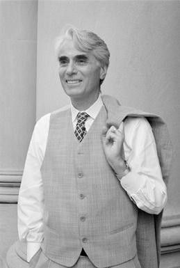

The field of philosophy concerned with justice, political authority,
liberty, equality, rights, government, law, democracy, power, and the
conditions under which political institutions can be considered
legitimate and just.
What Is Political Philosophy?
Political philosophy is the branch of philosophy concerned with the
nature, justification, and purposes of political life. It asks how human
beings should live together under conditions of disagreement,
cooperation, dependence, conflict, unequal power, and competing
interests. Rather than merely describing how governments and political
institutions operate, political philosophy evaluates the principles that
could justify or criticize them. It therefore asks what makes political
authority legitimate, what rights individuals possess, what justice
requires, and when the use of political power or coercion can be morally
justified.
What is political philosophy? It is the philosophical
study of political authority, justice, freedom, rights, equality,
power, law, citizenship, and the organization of collective life.
Why should anyone obey the state? Political
philosophy examines whether governments possess a legitimate authority
to make laws and impose obligations on citizens.
What makes a government legitimate? It asks what
conditions must be satisfied before political power can be regarded as
justified rather than merely imposed through force.
What is political justice? It investigates how
rights, opportunities, resources, responsibilities, and political
power should be distributed within society.
How much freedom should individuals have? It examines
the relationship between individual liberty and legitimate
restrictions imposed for security, public order, or the protection of
others.
What does equality require? Political philosophers
ask whether equality concerns rights, political status, opportunity,
wealth, resources, social standing, or some combination of these.
When may political power be resisted? Questions about
civil disobedience, revolution, rebellion, and resistance arise when
governments violate rights or seriously fail to meet standards of
legitimacy and justice.
The subject of political philosophy is therefore broader than the state
itself. It includes relationships among individuals, governments, laws,
institutions, communities, social groups, and different forms of
collective power. Political philosophers examine constitutions,
legislatures, courts, elections, political parties, markets, property
systems, welfare institutions, and other arrangements when they raise
questions about legitimacy, justice, freedom, equality, or authority.
The field also considers political relationships that extend beyond
national borders, including war, international justice, migration,
global inequality, human rights, and the responsibilities of states
toward people outside their own political communities.
State and government: What is the purpose of the
state, and what functions should governments legitimately perform?
Political authority: What gives a government the
right to command, legislate, punish, tax, or exercise coercive power?
Sovereignty: Where does supreme political authority
reside, and can sovereignty be limited by constitutional, moral, or
international principles?
Citizenship: What rights and responsibilities belong
to citizens, and who should qualify for political membership?
Democracy: Why should citizens participate in
collective decision-making, and what makes democratic rule legitimate?
Law and political obligation: Under what conditions
does a person have a moral obligation to obey the law?
Property and economic distribution: What justifies
private property, taxation, markets, welfare, or redistribution of
resources?
War and international relations: When, if ever, is
war morally justified, and what principles should govern conduct
during war?
Political philosophy differs from political science, although the two
disciplines frequently overlap. Political science primarily investigates
political institutions, behavior, systems, and events through empirical
and comparative methods, while political philosophy asks normative and
conceptual questions about how political arrangements ought to be
organized. A political scientist might investigate why citizens vote in
particular ways, how institutions affect political participation, or how
governments distribute resources. A political philosopher might ask
whether citizens have an equal political voice, whether a distribution
of resources is just, or whether a particular form of political
authority is legitimate. Political philosophy can therefore use
empirical information while asking questions that cannot be answered by
empirical description alone.
Political science asks: How do political institutions
function, how do citizens behave, and what political outcomes actually
occur?
Political philosophy asks: How should political
institutions function, what political arrangements are justified, and
what principles should guide collective life?
Political facts: Empirical information can tell us
what governments, citizens, and institutions do.
Political values: Philosophical analysis asks whether
those actions and institutions are just, legitimate, free, equal, or
morally acceptable.
Conceptual analysis: Political philosophy examines
what concepts such as freedom, equality, authority, justice, rights,
and democracy actually mean.
Political philosophy is closely connected with ethics because political
institutions profoundly affect people's lives, opportunities, freedoms,
rights, and responsibilities. Yet political philosophy is not simply
ethics applied to government. Political institutions create distinctive
problems because people must make collective decisions even when they
disagree about religion, morality, culture, economic interests, and the
good life. A central problem is therefore the justification of coercion:
when, if ever, may the state legitimately force people to obey laws,
redistribute resources, restrict behavior, imprison offenders, or compel
citizens to contribute to collective institutions? Political philosophy
must balance individual liberty with collective interests while
accounting for the fact that political decisions are binding even on
those who disagree with them.
Justice: What principles should determine the fair
distribution of rights, opportunities, resources, and social
advantages?
Liberty: Which actions should individuals be free to
perform without political interference?
Rights: Which claims or protections should
governments recognize and respect even when doing so limits collective
power?
Equality: Which forms of inequality are morally
acceptable, and which require political correction?
Coercion: Under what circumstances can the state
legitimately restrict an individual's freedom?
Common good: Is there a shared social good that
political institutions should promote, or should government primarily
protect individual rights and freedom?
Pluralism: How can people with fundamentally
different moral, religious, cultural, and philosophical commitments
live together under common political institutions?
At its deepest level, political philosophy asks what it means for
political power to be justified rather than merely effective. A
government may be capable of enforcing its commands, but political
philosophy distinguishes the possession of power from the right to
exercise that power. This distinction gives rise to enduring debates
about consent, social contract, natural rights, popular sovereignty,
constitutional government, democracy, republicanism, liberalism,
socialism, conservatism, anarchism, and other traditions of political
thought. From Plato and Aristotle to Hobbes, Locke, Rousseau, Marx,
Mill, Rawls, Nozick, Arendt, and contemporary political philosophers,
the central problem remains how political institutions can be justified
in a world where human beings are both individually free and necessarily
dependent upon one another.
Who should rule? Should political authority belong to
kings, elites, citizens, representatives, constitutional institutions,
or no governing authority at all?
Why should people obey? Does political obligation
arise from consent, fairness, benefits received, natural duty,
membership, or another source?
What is the best form of government? How should
monarchy, aristocracy, democracy, republicanism, constitutionalism,
and other political arrangements be evaluated?
What makes democracy legitimate? Is democratic
legitimacy based on political equality, collective self-government,
participation, consent, representation, or some combination?
When is inequality justified? Can unequal wealth,
power, status, or opportunity be legitimate, and what limits should
apply?
When may citizens disobey? Can civil disobedience be
morally justified when laws are unjust?
Can political authority be abolished? Anarchist
traditions raise the question of whether coercive political authority
is necessary or morally defensible at all.
What responsibilities do states have? Political
philosophy examines obligations concerning welfare, security, human
rights, migration, war, environmental protection, and future
generations.
Core Questions of Political Philosophy
Political philosophy is organized around recurring questions that appear
in different forms across historical periods and political traditions.
Although philosophers disagree profoundly about the answers, many of
them are responding to the same basic problems: how political authority
should be justified, how political power should be limited, how social
goods should be distributed, and how individuals can live together while
retaining freedom and moral standing.
What makes political authority legitimate?
Why should a government have the right to make laws and impose
coercive rules upon citizens?
What is justice?
How should rights, opportunities, wealth, political power, and social
responsibilities be distributed?
What is political freedom?
Does freedom mean being left alone, having the capacity to act, or
being protected from domination and arbitrary power?
What rights do individuals possess?
Are rights natural, socially constructed, legally created, morally
justified, or some combination of these?
Why should citizens obey the law?
Does membership in a political community create a moral obligation to
obey its laws?
Is democracy the best form of government?
What gives democratic decisions their authority, and what should
happen when majority decisions violate individual rights?
When is political resistance justified?
Can citizens legitimately resist, disobey, or overthrow an unjust
government?
What inequalities are morally acceptable?
Can differences in wealth, status, power, or opportunity be justified?
These questions demonstrate why political philosophy cannot be reduced
to a single theory of government. A theory may defend democracy while
disagreeing about economic equality, support individual liberty while
disagreeing about property, or defend political authority while
rejecting unlimited state power. Political philosophy therefore consists
of competing frameworks for understanding the relationship between
freedom, authority, justice, and collective life.
The State, Government, and Political Authority
The state is one of the central concepts of political philosophy. In
modern political thought, the state is generally understood as a
political organization possessing institutions capable of making and
enforcing rules over a defined population and territory. Government
refers more specifically to the institutions and officials through which
political authority is exercised. Philosophers therefore distinguish the
state from a particular government: governments can change while the
political state and its legal institutions continue.
The philosophical problem is not simply explaining what states are, but
asking why they should exist and whether their authority can be
justified. States claim the power to make laws, collect taxes, regulate
behavior, punish violations, maintain public institutions, and sometimes
use force. Because these powers restrict individual freedom, political
philosophers ask what could possibly justify one group of human beings
possessing legitimate coercive authority over others.
Some theories justify the state by appealing to security and social
order. Thomas Hobbes famously argued that without a common political
authority, individuals would face severe insecurity and conflict. Other
theories place greater emphasis on rights and limited government. John
Locke argued that political authority should protect natural rights
rather than possess unlimited power. Rousseau developed a different
model in which legitimate political authority must express the general
will of citizens rather than simply impose the will of a ruler.
Political authority is therefore different from mere power. A government
may possess the practical ability to force people to obey while lacking
moral legitimacy. Political philosophy asks when coercive power becomes
legitimate authority and whether legitimate authority generates
obligations for those subject to it. Contemporary debates continue to
distinguish the legitimacy of political institutions from the separate
question of whether citizens have a general moral obligation to obey
their laws.
Justice, Equality, and Fairness
Justice is one of the central concepts of political philosophy. At its
most basic level, political justice concerns how benefits, burdens,
rights, opportunities, freedoms, and political power should be
distributed among members of a society. Yet philosophers disagree about
what makes a distribution just. Some emphasize equality, others liberty,
desert, entitlement, need, welfare, reciprocity, or the protection of
basic rights.
Ancient political philosophy often connected justice with the proper
order of the political community. Plato's Republic, for
example, examines justice through an account of the city and the
individual, while Aristotle distinguished different forms of justice and
emphasized proportionality, political participation, and the
distribution of offices. These approaches treated justice not merely as
equal shares but as a question concerning the proper relationships among
citizens and the purposes of political institutions.
Modern political philosophy increasingly placed individual rights,
freedom, and equality at the center of political justification. Liberal
theories generally maintain that citizens possess equal moral status and
that political institutions require justification. Socialist and
egalitarian traditions have additionally emphasized material conditions,
arguing that extreme inequalities in wealth and power can undermine
meaningful freedom even when individuals possess formally equal legal
rights.
John Rawls's theory of justice as fairness became one of the most
influential twentieth-century attempts to develop a systematic account
of political justice. Rawls asks what principles free and equal citizens
would choose under fair conditions of agreement. His theory gives
priority to equal basic liberties and places demanding conditions on
permissible social and economic inequalities. Robert Nozick challenged
this kind of patterned distribution by emphasizing individual rights,
voluntary transfer, and historical entitlement.
Contemporary political philosophy therefore contains competing theories
of distributive justice rather than one accepted definition. Debates
concern wealth inequality, taxation, education, healthcare, gender
equality, inherited advantage, global poverty, disability, political
representation, and access to social institutions. The underlying
question remains the same: what principles should determine who receives
what, who bears which burdens, and how citizens should relate to one
another as political equals?
Liberty, Rights, and Individual Freedom
Liberty is another foundational concern of political philosophy. A
political society can protect people from violence and disorder while
simultaneously restricting their choices. The philosophical problem is
therefore to determine which restrictions on human freedom are justified
and what kind of freedom political institutions should protect.
Questions about speech, religion, movement, association, privacy,
property, bodily autonomy, and political participation all involve
competing understandings of liberty.
One influential distinction separates negative and positive conceptions
of liberty. Negative liberty concerns the absence of interference by
other people or institutions, particularly the state. Positive liberty
concerns the capacity to direct one's own life or participate
effectively in collective self-government. Republican traditions add
another conception: freedom as non-domination, according to which a
person is unfree when subjected to arbitrary power even when that power
is not constantly exercised.
Rights provide another way of expressing limits on political power. A
right can function as a claim against other individuals or institutions,
a protected sphere of choice, or a justification for demanding
particular treatment. Philosophers have debated whether rights are
natural and pre-political, created by legal systems, grounded in human
interests, or justified through political institutions and social
practices.
Political philosophy also asks whether rights can conflict. Freedom of
speech, for example, may come into tension with concerns about
defamation, threats, public order, discrimination, or security. Property
rights may conflict with taxation or redistribution. Religious liberty
may conflict with laws designed to protect equality or prevent harm. A
political theory must therefore explain not only which rights exist but
also how conflicts among rights and competing political values should be
resolved.
Democracy, Citizenship, and Political Participation
Democracy is broadly associated with the idea that political power
should be exercised by the people, but political philosophers disagree
about what that principle requires. Majority voting is one mechanism of
democratic decision-making, but democracy also raises questions about
political equality, representation, participation, deliberation,
constitutional limits, and the protection of minorities. A society can
therefore hold elections without necessarily satisfying every
philosophical ideal associated with democracy.
Ancient Athens provides one of the earliest historically significant
examples of democratic political organization, although Athenian
democracy was far from modern universal suffrage. Women, enslaved
people, and many residents without citizen status were excluded from
political participation. Ancient political philosophy consequently
provides both an important source for democratic ideas and a reminder
that political equality has historically been defined very narrowly.
Democratic theory confronts a basic tension between majority rule and
individual rights. If the majority can decide anything it wants,
democratic procedures could theoretically be used to deprive minorities
of their liberties. Constitutional democracy attempts to address this
problem by combining popular government with legal and institutional
constraints, including constitutions, independent courts, protected
rights, and procedures designed to prevent temporary majorities from
exercising unlimited power.
Citizenship also involves more than possessing legal nationality.
Political philosophers ask whether good citizenship requires
participation, civic responsibility, public reason, solidarity, or
respect for institutions. Republican traditions have often emphasized
civic virtue and active participation, while some liberal approaches
place greater emphasis on individual freedom and the right to withdraw
from political activity.
Contemporary democratic philosophy also examines representation,
political polarization, deliberative democracy, electoral systems,
political inequality, misinformation, campaign finance, and the
influence of economic power on public decision-making. The philosophical
challenge is to determine how collective decisions can be legitimate
when citizens disagree deeply about values, interests, religion,
identity, and the common good.
Power, Sovereignty, and Political Legitimacy
Political power concerns the ability of individuals or institutions to
shape the behavior, choices, opportunities, and expectations of others.
Political philosophy distinguishes the possession of power from the
possession of legitimate authority. A ruler may successfully control a
population through force while lacking a moral justification for doing
so. Legitimacy therefore asks why a political order has a justified
claim to exercise power.
Sovereignty traditionally refers to supreme political authority within a
political territory. Early modern political thinkers transformed the
concept as European states became increasingly centralized. Hobbes
defended a strong sovereign authority as necessary for peace and
security, while later liberal traditions emphasized limits on government
and the rights of individuals. Modern constitutionalism attempts to
reconcile effective political authority with restrictions that prevent
rulers from becoming arbitrary.
Political legitimacy can be understood in several ways. A theory may ask
whether the state is morally justified in coercing its members, whether
its directives create genuine duties to obey, or whether the state
possesses a right to rule that corresponds to an obligation on the part
of citizens. These questions are related but not identical, and
contemporary political philosophy carefully distinguishes them.
Legitimacy also raises the question of consent. Social contract theories
use hypothetical or actual agreement to explain why political
institutions can claim authority. Yet contemporary philosophers debate
whether ordinary citizens have actually consented to their governments
merely by living within a territory or participating in its
institutions. The problem of political legitimacy therefore remains open
even within broadly democratic theories.
Political Obligation and the Duty to Obey the Law
Political obligation asks whether citizens have a moral duty to obey the
laws of their political community. This is different from simply asking
whether a law exists. A government can legally require an action without
that legal requirement automatically proving that citizens have a moral
obligation to comply. Political philosophers therefore investigate what,
if anything, transforms legal commands into moral duties.
Consent theories argue that political obligation can arise through
agreement. Social contract theories historically developed this idea in
different ways. Hobbes, Locke, and Rousseau all used contract reasoning,
but they reached significantly different conclusions about sovereignty,
liberty, political participation, and legitimate government. Modern
contract theories often use hypothetical agreement rather than claiming
that an actual historical contract occurred.
Other theories appeal to fairness, gratitude, associative obligations,
natural duties, or the benefits provided by political institutions. Yet
each approach faces serious objections. If consent must be explicit,
very few citizens may have consented. If residence counts as consent,
critics can argue that leaving a country may be difficult or practically
impossible. If political obligation arises from receiving benefits,
philosophers must explain whether benefits imposed without genuine
choice can generate duties.
Philosophical anarchists challenge the assumption that citizens possess
a general moral obligation to obey the law at all. Their arguments do
not necessarily claim that every state is unjust or that every law
should be disobeyed. Instead, they question whether political authority
itself has a sufficient moral basis. This makes political obligation one
of the clearest examples of the difference between political philosophy
and ordinary assumptions about government.
Law, Political Authority, and the Common Good
Law is one of the principal instruments through which political
authority is exercised. Political philosophy therefore asks what laws
are justified, what makes legal institutions legitimate, and when
citizens may reasonably resist laws that they regard as unjust. These
questions overlap with the philosophy of law, but political philosophy
approaches them especially through the relationships among authority,
justice, citizenship, and political legitimacy.
The idea of the common good has played an important role throughout the
history of political thought. Classical and medieval philosophers often
understood political communities in terms of shared purposes and forms
of human flourishing. Liberal political philosophy became more cautious
about imposing a single conception of the good life, emphasizing instead
the protection of individual freedom and the peaceful coexistence of
different moral and religious commitments.
This produces a persistent problem: should governments promote
particular conceptions of human flourishing, or should they remain
neutral among competing ways of life? A state that promotes education,
public health, or cultural institutions may claim to advance shared
interests, while critics may worry that such policies impose
controversial values on citizens. Political philosophy examines where
legitimate public purposes end and unjustified paternalism begins.
Property, Wealth, and Economic Justice
Property is not merely an economic concept; it is also a political and
moral institution. Political philosophers ask why individuals may
legitimately possess property, what kinds of property rights should
exist, how property can be acquired, and whether the state may
redistribute wealth through taxation or other policies. Because systems
of property influence power and opportunity, theories of property are
closely connected with theories of justice.
John Locke offered one of the most influential early modern accounts of
property, connecting legitimate appropriation with labor while placing
important limits on acquisition. Later liberal and libertarian theories
developed strong accounts of individual ownership and voluntary
exchange. Robert Nozick, for example, argued that justice should be
understood partly through legitimate acquisition and transfer rather
than through enforcing a preferred final pattern of distribution.
Socialist and Marxist traditions challenge the idea that existing
property relations can be treated simply as the result of individual
choices. Karl Marx analyzed property, labor, class relations, and the
organization of production as fundamental features of social and
political structure. From this perspective, economic institutions can
produce forms of dependence and power that cannot be understood merely
by examining individual ownership rights.
Contemporary theories continue to debate taxation, inheritance, wealth
inequality, economic opportunity, social welfare, labor rights,
healthcare, education, and access to resources. The central question is
not simply whether inequality exists, but whether particular
inequalities can be justified among people who are regarded as political
and moral equals.
Major Political Philosophies
Political philosophy contains numerous traditions rather than one
unified doctrine. These traditions often overlap and contain internal
disagreements. Liberalism, republicanism, conservatism, socialism,
Marxism, anarchism, communitarianism, libertarianism, and feminist
political philosophy each emphasize different aspects of political life
and develop different answers to questions about freedom, authority,
equality, property, community, and justice.
Liberalism places individual liberty and equal moral
status near the center of political justification. Liberal theories
differ considerably, however. Classical liberalism tends to emphasize
limited government, private property, and individual freedom, while
egalitarian liberalism gives greater attention to fair opportunity and
the social conditions required for meaningful liberty.
Republicanism has roots in ancient and Roman political
thought and was developed through later traditions associated with civic
participation, mixed government, rule of law, and resistance to
domination. Contemporary republican theorists often define freedom as
non-domination: being free means not living under another person's
arbitrary power.
Conservatism generally places greater philosophical
weight on inherited institutions, social continuity, tradition,
practical judgment, and skepticism toward rapid political
reconstruction. Conservatism is not identical with opposition to all
political change; many conservative arguments instead maintain that
reform should account for the complexity and historical development of
social institutions.
Socialism encompasses traditions that criticize forms
of economic inequality and emphasize collective control, social
ownership, cooperation, or democratic management of productive
resources. Socialist theories differ substantially over markets, state
ownership, workplace democracy, redistribution, and the relationship
between individual freedom and economic organization.
Marxism analyzes political and social life through
concepts including class, labor, capitalism, ideology, exploitation, and
historical development. Marxist political thought contains many later
interpretations, but a recurring concern is how economic structures
shape political power and social relations.
Anarchism questions the legitimacy or necessity of
hierarchical political authority, especially coercive state
institutions. Anarchist traditions differ widely, ranging from
individualist approaches to communist, collectivist, mutualist, and
other forms of anti-authoritarian political thought. Their common
philosophical challenge is to explain how social coordination and
justice can exist without centralized political domination.
Communitarianism emphasizes the social and cultural
relationships through which individuals develop their identities,
values, responsibilities, and conceptions of the good. Communitarian
thinkers have criticized versions of liberalism that appear to treat
individuals as excessively detached from communities and historical
traditions.
Feminist political philosophy examines how political
institutions, social norms, family structures, economic systems, and
concepts of citizenship have been shaped by gender relations. It has
expanded political philosophy's traditional concerns to include care,
dependency, reproductive politics, gendered labor, bodily autonomy,
structural inequality, and the relationship between private and public
power.
Social Contract Theory
Social contract theory is one of the most influential approaches in
modern political philosophy. It uses the idea of an agreement among
persons to explain political authority, political obligation, or the
principles that should govern a legitimate society. The "contract" is
often a philosophical model rather than a claim that an actual
historical contract created modern states.
Thomas Hobbes used the state of nature to imagine human beings without a
common sovereign authority. His argument emphasizes insecurity and the
need for a powerful political authority capable of maintaining peace.
John Locke developed a more limited conception of government grounded in
natural rights, consent, and the protection of life, liberty, and
property.
Jean-Jacques Rousseau developed a substantially different account. For
Rousseau, legitimate political authority must be compatible with freedom
and must express the general will of citizens rather than simply impose
the private interests of rulers or factions. His political philosophy
therefore connects social contract theory with popular sovereignty and
democratic self-government.
John Rawls revived contract reasoning in the twentieth century through
his theory of justice as fairness. His original position asks what
principles of justice rational agents would choose when deprived of
knowledge about their own social position and particular advantages.
This hypothetical procedure transforms social contract theory into a
method for thinking about fairness rather than a historical explanation
of how governments actually originated.
Political Resistance, Revolution, and Civil Disobedience
Political philosophy must explain not only why citizens should obey
political institutions but also when resistance to those institutions is
justified. If political authority is conditional rather than absolute,
sufficiently serious injustice may provide reasons for refusing
obedience. The philosophical challenge is to determine how serious an
injustice must be before resistance becomes morally permissible.
John Locke famously defended a right of resistance against governments
that violate the purposes for which political authority exists.
Revolutionary traditions developed this idea further, arguing that
political institutions can lose legitimacy when they systematically
violate fundamental rights or destroy the conditions of legitimate
government.
Civil disobedience presents a more limited form of resistance. It
generally involves deliberate and public violation of law for political
or moral purposes, often while accepting some legal consequences. Henry
David Thoreau, Mahatma Gandhi, and Martin Luther King Jr. became
especially influential in the history of civil disobedience, although
their arguments emerged from different philosophical and historical
contexts.
Political philosophers also ask whether resistance must remain
nonviolent, whether revolutionary violence can ever be justified, and
whether citizens have responsibilities to preserve political order even
when they oppose particular laws. These questions become especially
difficult when governments themselves use systematic violence or when
ordinary legal mechanisms are incapable of correcting profound
injustice.
Nationalism, Citizenship, and Political Community
Political communities are not defined only by governments and laws. They
can also involve shared languages, historical memories, cultural
practices, identities, and narratives of belonging. Nationalism raises
the philosophical question of whether nations possess a special claim to
political self-rule and how national identity should relate to
individual rights and universal moral principles.
Some forms of nationalism emphasize political self-determination: a
people should have the ability to govern itself rather than remain
subject to an external political power. Other forms place greater
emphasis on cultural identity, language, historical continuity, or
membership in a particular national community. These different forms of
nationalism should not be treated as philosophically identical.
Nationalism also creates tensions between particular political
membership and universal moral equality. If all human beings possess
equal moral status, can citizens legitimately prioritize compatriots
over foreigners? Political philosophy examines this problem in debates
over immigration, borders, refugees, international justice, global
poverty, and national self- determination.
War, Peace, and International Political Philosophy
Political philosophy traditionally focused on relations within states,
but political thinkers have also asked when war can be morally justified
and what obligations exist between political communities. The philosophy
of war examines questions concerning legitimate authority, just causes,
proportional force, civilian immunity, military necessity, and the
treatment of prisoners and non-combatants.
Just war traditions attempt to establish moral criteria for judging both
the decision to enter war and conduct during war. Other philosophical
traditions are more skeptical of war and emphasize pacifism, the moral
equality of persons, or the destructive consequences of organized
violence. Contemporary debates also address terrorism, humanitarian
intervention, nuclear weapons, autonomous weapons, and the
responsibilities of states toward populations outside their own borders.
International political philosophy further asks whether global
institutions can be legitimate and whether principles of justice should
apply across national borders. Philosophers disagree over whether states
have stronger duties toward their own citizens than toward foreigners
and whether a more cosmopolitan political order is philosophically
desirable.
History of Political Philosophy
Political philosophy has developed through a long history of debates
about justice, authority, citizenship, law, and political community.
Ancient philosophers asked what makes a good political order; medieval
thinkers connected political authority with theology and natural law;
early modern philosophers examined sovereignty, rights, and consent;
Enlightenment thinkers developed new accounts of liberty and popular
government; nineteenth-century thinkers confronted industrial capitalism
and social inequality; and twentieth-century philosophers developed
increasingly sophisticated theories of justice, rights, democracy, and
legitimacy.
Ancient Greek Political Philosophy
Plato and Aristotle established many of the foundational questions of
Western political philosophy. Plato's Republic asks what
justice is and develops a philosophical account of political order,
education, leadership, and the relationship between individual character
and the city. His Laws offers a different and more
institutional approach to political organization and legal order.
Aristotle's Politics analyzes constitutions, citizenship,
political participation, and the purposes of political community. He
classified political regimes according to whether rulers governed for
common or private advantage and emphasized the importance of
constitutional arrangements, civic participation, and the conditions
necessary for a stable political community.
Medieval Political Philosophy
Medieval political philosophy developed within intellectual environments
shaped by Christianity, Islam, and Judaism, while also drawing
extensively upon ancient Greek philosophy. Augustine reflected on
political authority, earthly political communities, and the relationship
between temporal society and religious concerns. Thomas Aquinas
integrated Aristotelian political thought with natural law and Christian
theology, treating political community as connected with human
flourishing and the common good.
Renaissance and Early Modern Political Philosophy
Niccolò Machiavelli transformed political thought by examining political
power, conflict, institutions, civic virtue, and the practical realities
of ruling. His work helped move political philosophy toward a more
direct analysis of political action and the preservation of political
communities.
The seventeenth century produced a major transformation in political
philosophy. Thomas Hobbes developed a powerful theory of sovereignty and
the social contract, while John Locke defended natural rights, consent,
limited government, and a right of resistance. These debates became
central to later liberal and constitutional political thought.
Enlightenment Political Philosophy
Jean-Jacques Rousseau challenged existing political institutions through
arguments about freedom, inequality, popular sovereignty, and the
general will. Immanuel Kant developed a political philosophy grounded in
autonomy, right, republican government, and the possibility of a lawful
international order. Enlightenment political philosophy also helped
shape modern debates about constitutional government, citizenship,
religious toleration, and universal rights.
Nineteenth-Century Political Philosophy
Nineteenth-century political philosophy responded to industrialization,
nationalism, revolution, capitalism, and changing social structures.
Hegel developed a systematic account of freedom, civil society, and the
modern state. John Stuart Mill defended individual liberty,
representative government, and arguments for expanding political
participation while also confronting questions of social progress and
gender equality.
Karl Marx offered a fundamental critique of capitalist political
economy, emphasizing class relations, labor, exploitation, ideology, and
historical change. Marx's political thought became the foundation for
numerous later socialist and communist traditions, while also provoking
extensive criticism and reinterpretation.
Twentieth-Century and Contemporary Political Philosophy
Twentieth-century political philosophy included competing liberal,
libertarian, socialist, Marxist, republican, communitarian, feminist,
and critical approaches. Hannah Arendt examined totalitarianism,
political action, freedom, authority, revolution, and the nature of
public life. John Rawls transformed contemporary political philosophy
through his theory of justice as fairness and later developed political
liberalism as an account of legitimacy under conditions of reasonable
disagreement.
Robert Nozick challenged Rawlsian distributive approaches from a
libertarian perspective, emphasizing individual rights and constraints
on state action. Later philosophers expanded political philosophy into
debates about gender, race, recognition, disability, global justice,
nationalism, migration, environmental politics, democratic legitimacy,
and structural forms of domination. Contemporary political philosophy is
therefore highly pluralistic rather than organized around a single
dominant theory.
Major Problems in Political Philosophy
One of the deepest problems is the
problem of political authority. Political institutions
claim the right to make rules that others must follow, but the mere
existence of political power does not establish that the power is
morally justified. Political philosophy therefore asks what conditions
transform coercive power into legitimate authority.
The problem of political obligation asks whether
citizens have a general moral duty to obey the laws of their state.
Consent, fairness, natural duty, membership, gratitude, and associative
obligations have all been proposed as possible explanations, while
philosophical anarchists question whether a general obligation exists at
all.
The problem of distributive justice concerns how
political institutions should distribute wealth, opportunity, rights,
social advantages, and burdens. Egalitarian theories emphasize equality,
libertarian theories emphasize rights and legitimate holdings, and other
approaches emphasize welfare, need, desert, reciprocity, or
capabilities.
The problem of freedom concerns what it means to be
free in a political society. Freedom may require protection from
interference, access to meaningful opportunities, participation in
self-government, or protection against arbitrary domination. Different
conceptions of liberty can therefore support very different political
institutions.
The problem of democracy concerns why collective
decisions made through democratic procedures should be regarded as
legitimate. Majority rule may promote political equality, but it can
also produce unjust outcomes. Democratic theory must therefore explain
the relationship between popular sovereignty, minority rights,
constitutional limits, representation, and political equality.
The problem of resistance asks when citizens may
legitimately disobey or oppose political institutions. If governments
systematically violate fundamental rights, does political legitimacy
disappear? If resistance is justified, must it remain peaceful? These
questions connect political philosophy with civil disobedience,
revolution, constitutionalism, and the ethics of political violence.
Contemporary Political Philosophy
Contemporary political philosophy is a diverse field containing
competing theories rather than a single dominant school. Liberalism
remains highly influential, but it is accompanied by libertarianism,
republicanism, communitarianism, socialism, Marxism, feminist political
philosophy, critical theory, theories of recognition, and cosmopolitan
approaches to global justice.
One major contemporary concern is the relationship between formal
equality and substantive equality. A society may give every citizen
identical legal rights while preserving large inequalities in wealth,
education, political influence, or social opportunity. Political
philosophers therefore ask whether equal rights are sufficient or
whether justice also requires institutions capable of preventing extreme
concentrations of social and economic power.
Contemporary political philosophy has also expanded beyond the
traditional boundaries of the nation-state. Global poverty, migration,
refugees, international institutions, climate change, war, colonial
history, and transnational economic systems raise questions about
whether justice should be understood primarily within states or across
humanity as a whole.
New technologies have introduced additional political questions. Digital
surveillance, algorithmic decision-making, artificial intelligence,
misinformation, online political organization, and the concentration of
technological power create new problems concerning privacy, democracy,
autonomy, political equality, and accountability. These issues show how
political philosophy continues to adapt as the institutions and
technologies through which power is exercised change.
Contemporary political philosophers also examine structural injustice:
situations in which harmful outcomes arise not simply from individual
wrongdoing but from the interaction of social institutions, norms,
economic arrangements, and historical inequalities. This approach has
expanded political philosophy's attention to gender, race, class,
disability, migration, colonialism, and social recognition while
continuing to ask the traditional questions of justice, freedom, and
political legitimacy.
Political Philosophy and Other Fields of Philosophy
Political philosophy is deeply connected with ethics
because political institutions make decisions that affect human welfare,
freedom, rights, responsibility, and the distribution of opportunities.
Ethical theories can therefore influence political theories of
punishment, justice, war, political obligation, and the legitimate use
of coercion.
Political philosophy also overlaps with
metaphysics when it asks questions about the nature of
persons, collective identities, nations, social groups, and political
institutions. Questions about whether groups can possess rights or
whether collective entities are real in a meaningful sense can have
direct political consequences.
Epistemology becomes important when political
philosophy asks how citizens can make legitimate collective decisions
under conditions of disagreement and incomplete information. Democratic
deliberation, public reason, expertise, propaganda, misinformation, and
political knowledge all raise epistemological questions.
Philosophy of law overlaps with political philosophy in
the study of authority, rights, punishment, legal obligation,
constitutionalism, and the legitimacy of coercive rules. Political
philosophy is particularly concerned with the moral justification of
political institutions, while philosophy of law examines the nature,
interpretation, authority, and validity of law more broadly.
Political philosophy also connects with the
philosophy of religion
when questions of religious freedom, secular government, divine
authority, conscience, religious pluralism, and the relationship between
religious and political institutions arise. These connections
demonstrate that political philosophy cannot be isolated from the wider
philosophical investigation of human beings, values, knowledge, law, and
social life.
POLITICAL PHILOSOPHERS
Key Thinkers in Political Philosophy
Philosophers whose ideas transformed our understanding of justice,
political authority, liberty, government, rights, sovereignty,
democracy, and the organization of political life.
Rawls transformed twentieth-century political philosophy through his
theory of justice as fairness. His original position and veil
of ignorance provide a method for considering principles of justice
under conditions designed to exclude arbitrary social advantages.
Rawls later developed political liberalism to address how a democratic
society can remain legitimate and stable when citizens hold diverse
and sometimes incompatible religious and philosophical worldviews.
"Justice is the first virtue of social institutions."

Robert Nozick
Nozick developed one of the most influential libertarian theories of
the twentieth century. In Anarchy, State, and Utopia, he
defended strong individual rights and argued for a minimal state whose
functions are largely restricted to protecting individuals against
force, theft, fraud, and breaches of contract. His arguments became a
major challenge to Rawlsian theories of distributive justice.
"Individuals have rights, and there are things no person or group may
do to them without violating their rights."
Contemporary Debates in Political Philosophy
Contemporary political philosophy continues to debate the relationship
between liberty and equality. Libertarian theories emphasize strong
individual rights and restrictions on state power, while egalitarian
theories argue that large inequalities can undermine fair political
cooperation. Other approaches attempt to combine substantial individual
freedom with institutions designed to secure fair opportunities and
social conditions for citizenship.
Democratic legitimacy is another major issue. Philosophers ask whether
democracy is justified because it protects individual interests, because
it treats citizens as political equals, because participation has
intrinsic value, or because democratic procedures possess important
epistemic advantages. These approaches can produce different conclusions
about representation, deliberation, majority rule, and constitutional
constraints.
Political philosophy increasingly addresses structural injustice and
social domination. Instead of focusing exclusively on individual acts of
discrimination or wrongdoing, contemporary theories examine how
institutions, social norms, economic arrangements, and inherited
historical conditions can systematically affect people's opportunities
and political standing.
Global justice has also become increasingly important. Philosophers
debate whether obligations of justice stop at national borders or extend
to all human beings. Questions concerning global poverty, migration,
refugees, climate change, international inequality, war, and the
responsibilities of wealthy states have expanded political philosophy
beyond the traditional framework of the nation-state.
Famous Thought Experiments in Political Philosophy
Political philosophers frequently use hypothetical situations to test
principles of justice and political legitimacy. These thought
experiments remove particular historical circumstances or personal
advantages so that philosophical principles can be examined more
clearly.
Hobbes's state of nature asks what political life would
look like if there were no common sovereign authority. The thought
experiment is intended to illuminate the problem of insecurity and the
reasons individuals might have for establishing political authority.
Locke's state of nature begins from a different
conception of human beings as possessing natural rights and moral
obligations even without a government. It therefore asks why political
authority is necessary if individuals already possess moral rights
before entering civil society.
Rousseau's social contract asks how individuals can
enter a political association while remaining free. The problem is not
simply how to create order but how legitimate collective authority can
preserve the freedom and equality of those who are governed.
Rawls's original position places hypothetical parties
behind a veil of ignorance, preventing them from knowing facts such as
their class, wealth, talents, religion, or social position. The thought
experiment asks what principles of justice would be selected under
conditions intended to make the choice fair.
Political Philosophy FAQ
What is political philosophy?
Political philosophy is the philosophical study of political authority,
justice, liberty, rights, government, democracy, law, power,
citizenship, and the principles that can justify political institutions.
It asks not only how political systems operate but how political
institutions ought to be organized.
What are the main questions of political philosophy?
Major questions include what makes government legitimate, why citizens
should obey laws, what justice requires, what rights individuals
possess, what political freedom means, whether democracy is justified,
how wealth and political power should be distributed, and when
resistance to government is morally justified.
What is political authority?
Political authority is the morally justified right or entitlement of a
political institution to exercise coercive power and make decisions that
citizens are expected to recognize as binding. Philosophers disagree
about what gives political institutions this authority, with theories
appealing to consent, justice, democracy, benefits, natural duties, or
other principles.
Why should people obey the law?
Political philosophers disagree about whether people have a general
moral obligation to obey the law. Proposed explanations include consent,
fairness, natural duties, membership in a political community, and the
benefits of social cooperation. Philosophical anarchists question
whether political authority can establish a general duty to obey.
What is political justice?
Political justice concerns the fair organization of political and social
institutions. It includes questions about rights, liberties, equality,
political participation, economic distribution, opportunities, and the
treatment of citizens as moral and political equals.
What is the difference between political philosophy and political
science?
Political science primarily investigates political institutions,
behavior, systems, and events through empirical and analytical methods.
Political philosophy evaluates political concepts and asks normative
questions about justice, legitimacy, authority, freedom, rights, and how
political institutions ought to be organized. The two disciplines can
inform one another but answer different kinds of questions.
What is the social contract?
Social contract theory uses the idea of agreement among individuals to
explain political authority, political obligation, or the principles of
a just political society. Hobbes, Locke, and Rousseau developed major
versions of the theory, while Rawls later used hypothetical agreement as
a method for thinking about principles of justice.
What is the difference between liberty and equality?
Liberty concerns the freedom and independence of individuals, while
equality concerns how people should stand in relation to one another
with respect to rights, status, resources, opportunities, or political
power. Political philosophy debates whether liberty and equality
necessarily conflict or whether certain forms of equality are necessary
conditions for meaningful freedom.
What is political legitimacy?
Political legitimacy concerns whether a political institution is morally
justified in exercising power over people. A government may possess
power without being legitimate, so legitimacy requires an explanation of
why its authority is justified and what claims it can legitimately make
upon citizens.
Who are the most important political philosophers?
Major figures include Plato, Aristotle, Augustine, Thomas Aquinas,
Machiavelli, Thomas Hobbes, John Locke, Jean-Jacques Rousseau, Immanuel
Kant, G. W. F. Hegel, Karl Marx, John Stuart Mill, Hannah Arendt, John
Rawls, and Robert Nozick. Political philosophy also includes many
important traditions and thinkers beyond this commonly studied list.
Why Study Political Philosophy?
Political philosophy helps us understand the principles underlying the
institutions that shape collective life. Governments determine laws,
distribute public resources, regulate behavior, protect rights, and
exercise coercive power. Studying political philosophy allows us to
examine the justification of these activities rather than simply
accepting existing political arrangements as inevitable.
It also develops the ability to distinguish political disagreement from
disagreement about fundamental principles. Two people may support
different tax systems because they have different conceptions of
justice. They may disagree about freedom because they understand liberty
differently. They may disagree about democracy because they have
different views about political equality, competence, representation, or
individual rights.
Political philosophy is particularly valuable because political
decisions affect people who do not necessarily agree with one another. A
democratic society contains citizens with different religions, moral
beliefs, identities, economic interests, and conceptions of the good
life. Political philosophy asks how such people can live together under
common institutions without allowing disagreement to become domination.
The field also provides conceptual tools for thinking about contemporary
problems. Questions about economic inequality, civil liberties,
migration, political polarization, surveillance, artificial
intelligence, climate policy, discrimination, war, nationalism, and
democratic institutions all contain philosophical assumptions about
justice, freedom, rights, authority, and responsibility.
Ultimately, political philosophy asks one of the most consequential
questions in philosophy:
how should human beings organize their shared political life?
Its answers remain contested because political life contains genuine
conflicts among liberty, equality, security, authority, community, and
individual rights. Studying those conflicts does not require accepting
one political ideology; it requires learning how to examine political
principles critically, consistently, and philosophically.